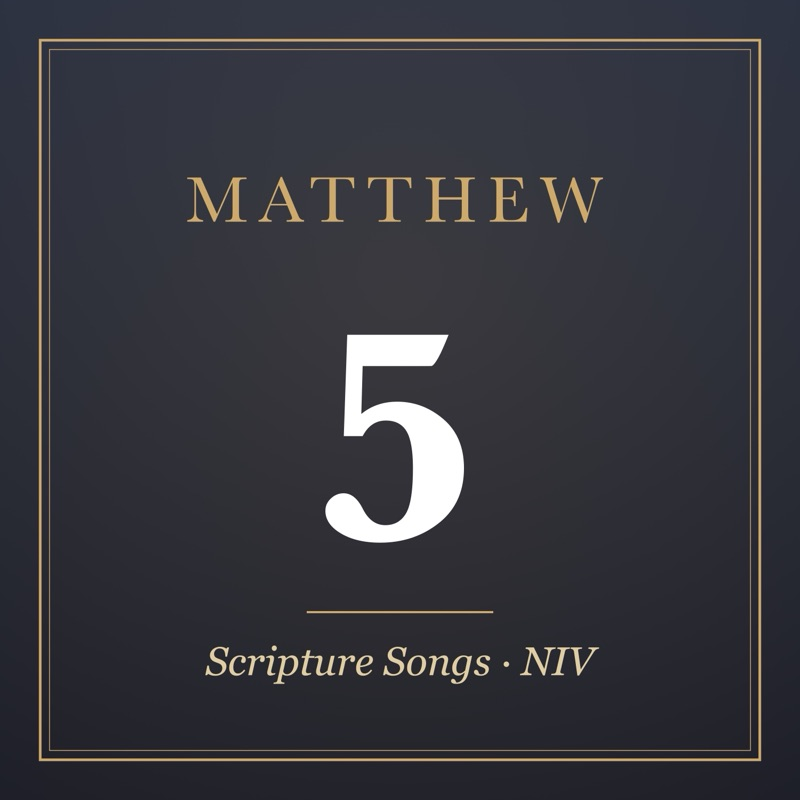
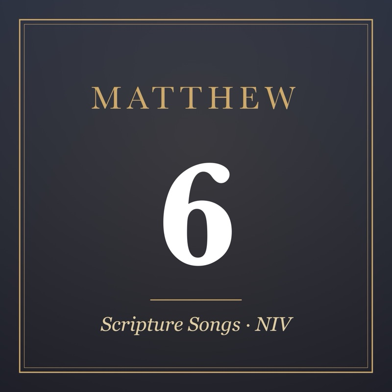

Matthew 5
Matthew 5:1–6
Acoustic Pop · 1:16
Matthew 5:7–12
Christian Hip-Hop · 1:43
Matthew 5:13–16
Reggaeton · 1:47
Matthew 5:17–20
Indie Rock · 1:56
Matthew 5:21–24
New Jack Swing · 1:22
Matthew 5:25–28
Synth-Pop · 2:11
Matthew 5:29–32
Drum and Bass · 1:36
Matthew 5:33–37
Modern Country · 1:36
Matthew 5:38–42
Dancehall · 1:00
Matthew 5:43–48
Christian Rock · 2:31

About these songs
The lyrics are the Bible verses themselves, from the New International Version, just as we memorized them. We made the music with the help of AI (Suno). You're welcome to listen to, download and share these songs for free – for memorizing Scripture at home, in a small group or at church.
The files are AAC (.m4a) and play on iPhone, Android, Mac and Windows.
Scripture quotations taken from The Holy Bible, New International Version® NIV®. Copyright © 1973, 1978, 1984, 2011 by Biblica, Inc.™ Used by permission. All rights reserved worldwide.